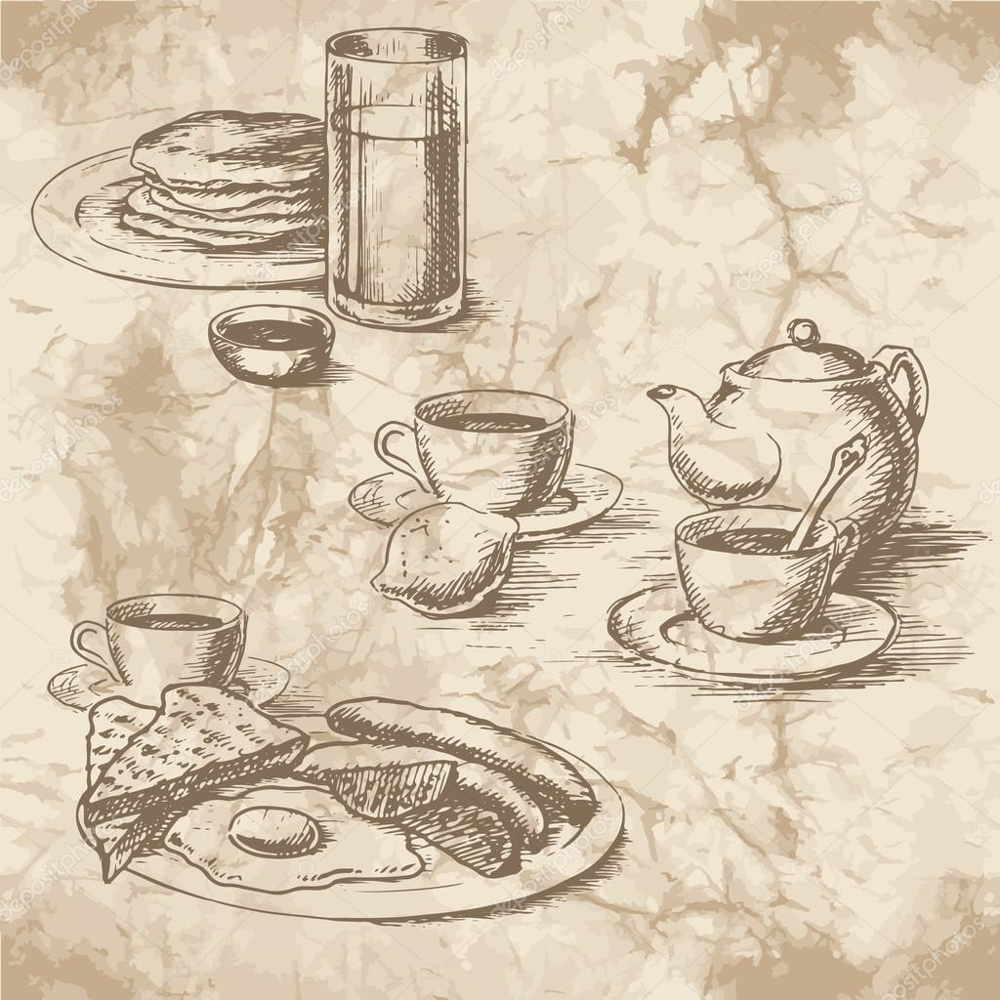
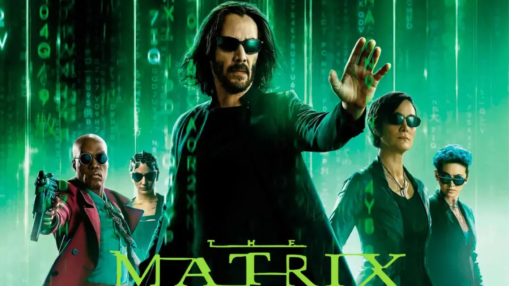

Let's write a story
Como todos los lunes despues de trabajar Susana y Mario empezaron a pensar que hacer durante la tarde. Normalmente paseaban y luego tomaban algo, pero hoy hacía mucho calor y decidiron cambiar de planes, irían a la playa.
A tarda estaba tranquila e Susana e Mario deixaban pasar o tempo cómodamente na praia.
... a Susana empezaba a pensar que se cadra o día non ía ser tan maravilloso como estaba a pensar uns minutos atrás.
Aquella tarde soleada se vio alterada por un extraño fenómeno. Fue Mario quien notó que el paisaje comenzaba a cambiar. Preguntó a su pareja: «¿Susana, no te da la impresión de que a lo lejos, donde el cielo y el mar se juntan, empieza a oscurecerse?». Susana miró hacia donde Mario señalaba y respondió: «Pues sí, parece que se viene una tormenta; pero según las noticias hoy haría bueno». Pero aquella misteriosa oscuridad se extendía cada vez más rápido en dirección a la playa. Cuando se decidieron a recoger y marchar de allí, ya era tarde, de pronto se encontraron envueltos en una oscura neblina que no les permitía verse el uno al otro, y eso que se encontraban a menos de un metro de distancia; podían oír lo que decían, pero no verse, porque la neblina era oscura, pero silenciosa. «¿Qué hacemos, Mario». «Esperar, Susana, a que todo esto se aclare». Definitivamente el día estaba arruinado.
Susana, que agora se atopa na casa de Aurora, olla o efímero solpor coa lembranza do seu antiguo compañeiro de cando era nena, Tobi. Aurora, que nese intre se atopaba preparando a cea, lanzalle unha pregunta a Susana: - Susana, cando morreu Tobi... como encaixaches a dor? Susana ollou para o lado, de esguello, incómoda coa pregunta. Mete a man no peto, saca un cigarro que prende como se de unha xefa Yakuza se tratase e repóndelle a Aurora: - Nena, eu era só unha cativa cando morreu o can da casa, a día de hoxe, cando lembro o tempo que pasei con él, póñome triste. - Xamais vou a ser capaz de superalo, é algo que vou a levar no meu interior ata que remate o meu ciclo.
Á mañá seguinte, Susana e Mario quedan nun bar do porto, para almorzar xuntos e falar de como seguir co proxecto que teñen en común. - Escoita Susana, necesitamos outra persoa que nos axude coa parte legal, tes algunha persoa de confianza? - Mario, noon me presiones agora con ese tema, xa sabes que estou detrás de Xoan para que se una a nós. - Velo posible? Nese momento, o camareiro, Pedro, chega con 2 vasos de zume de laranxa, un té de frutos vermellos, un café solo largo, e varios pasteis que fan a función de aperitivo. Pedro, coidadosamente reparte o almorzo entre Susana e Mario: os pasteis no centro da mesa, un zume para cada unha, o café para Susana, e unha teteira, coa sua respectiva taza para Mario. - Vamos a ver Mario, fago o que está na miña man, pero hai límites morais que non estou disposta a sobrepasar. - incrépalle Susana a Mario - Joder Susana, necesitamos poñer a maquinaria en marcha, o proxecto afunde co paso do tempo. - Mario ponse en tensión. Mario, incómodo coa situación, comeza a botar o té que estaba en repouso dentro da teteira... e súbitamente, tras queimar o dedo índice, solta a teteira, que cae ao chan e rompe en mil pedazos! - pensa, Mario, qué vas facer agora con esa teteira? 
... nen Xan, nen os coellos, nen o maldito destascador.
... De supeto o día pasou a ser un capítulo de Alicia no Pais das Marabillas.
O coello apuraba o paso co seu reloxo picasiano, xusto antes de cair na pota onde un sabroso ajillo humedecía a suave pelambre de coello que o recubría e o calorciño adormecía ao incauto coello que pouco a pouco pasaba de cru ao punto (punto e seguido).
Xan debuxaba na súa mente un universo de Matrix no que Neo superaba por enésima vez as trampas que o axente Smith lle tendía, mentres pensaba como afrontar a tensión sexual con Trinity.
E neses universos de tensión sexual non resolta, o oráculo (que era orácula en realidade) prediceu o resultado da quiniela do sábado pasado mentres Morfeo metiase un pico de morfina e Cypher descifrou o código de McCormick, mentres que McCormick descifrou as cifras que Cypher tiña tatuadas no seu universo onírico.
Mentres Apoc pouco a pouco apoucaba contra o Axente Jones. Aquelo non podía seguir así; era necesario salir de alí, inmediatamente !. 
Era cedo demais. Non había nada dentro do local. Os postos de comerciantes que vendían no lado oposto da praza xunto ao mercado, estaban a falar entre eles. A semana anterior, no mesmo local, eu negociara con algún vendedor de zapatos ambulante procedente da zona desmilitarizada. O señor deunos un teléfono modificado e advertiu de varias cousas que hoxe non podo lembrar. Eu e máis o meu colega non fomos a ese lugar para escoitar contos ou lerias, as nosas prioridades eran outras. Conseguimos un acordo e compramos o calzado que estabamos buscando.
... non conseguían pasar a aspiradora por debaixo da perna do elefante.
E despos de reptir 4 veces cigalas e 6 veces as vieiras,
Manolo ao ver os lubrigantes dixo: Máis, non. Máis non, por favor.
- Xamon iberico
- Ameixas
- Langostinos
- Cigalas
- Vieiras
- Lubrigante
- Rodaballo
- Lenguado
- Carneiro
- Rabo de Toro
- Sorbete
- Tarta Nupcial
Cansados de lidiar con tanto animal, a parella decide botar a correr. Pouco tardan en darse conta de que iso non servirá, os animais eran demasiado rápidos. Nun momento de angustia, Susana otea na distancia buscando algo que os puidera axudar, algo no que ambos puideran fuxir, e alí estaba. Apoiado nunha das carpas había una bicicleta de dous sillíns, abandonada. Alí estaba, o tandem era a solución.
...Mario e Susana xa chegaran a casa, pero as súas dúas compañeiras ainda estaban en apuros e colleron o tandem que eles deixaran. Elena Nito era a encargada de pedalear e Esther Colero, como era máis preguiceira, so manexaba o manillar, pero ainda así conseguiron que o desatascador e o dono do circo xa quedaran atrás.
Elas namáis querían disfrutar da praia e do vento. Dirixíronse de novo á praia e decidiron repousar na taberna vendo o solpor.
Miráronse fíxamente e cavilaron no acontecido. Logo de tanta andaina...
De elefantes e teteiras, de carreiras e bicicletas duplas, de aspirados e demáis circos... Colleron cadanseu té e, sorrindo, decatáronse de que tampouco fora para tanto.